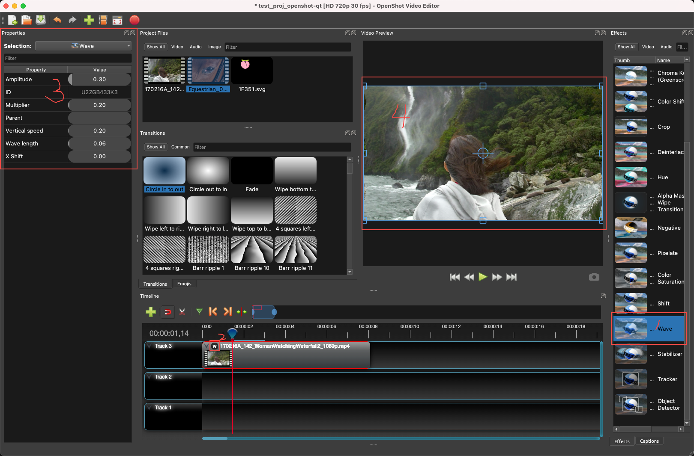
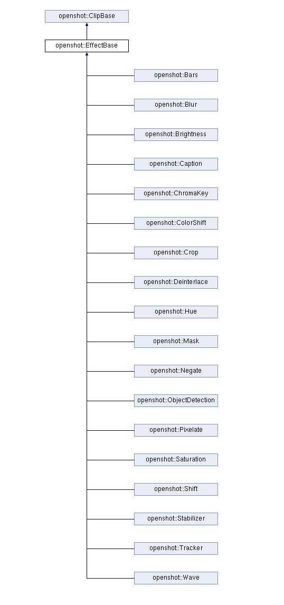
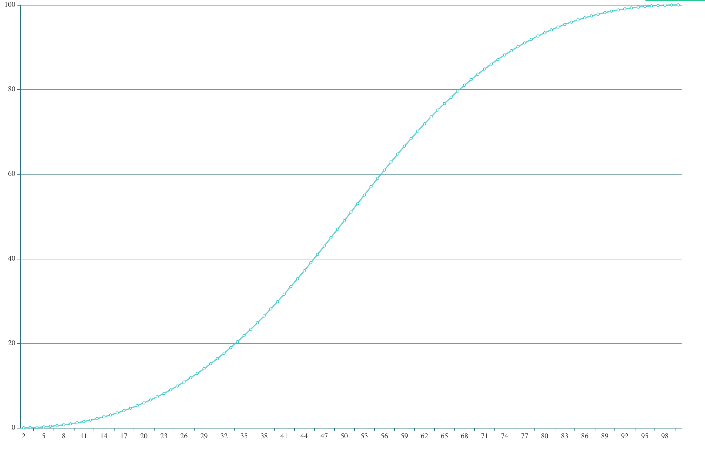
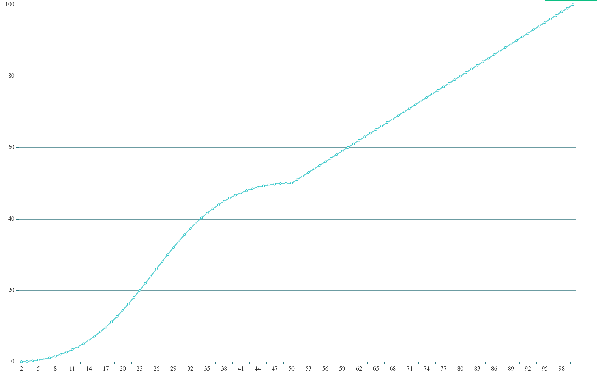

Effect

上图展示了在OpenShot中给视频添加了Wave这个效果：
- 选择Effect拖拽到对应clip上
- 选择效果图标，可以看到effect属性修改界面
- 更改effect属性
- 在预览界面就可以看到应用effect后的适配效果
在libopenshot中，effect是作用到frame上的。我们可以给Timeline和Clip添加一个或多个effect，当Timeline和Clip要去获取frame时，会遍历所有effect对frame进行应用。
1
2
3
4
5
6
7
8
9
10
11
|
// Apply effects to the source frame (if any)
void Clip::apply_effects(std::shared_ptr<Frame> frame)
{
// Find Effects at this position and layer
for (auto effect : effects)
{
// Apply the effect to this frame
frame = effect->GetFrame(frame, frame->number);
} // end effect loop
}
|
Wave这个effect的实现：
1
2
3
4
5
6
7
8
9
10
11
12
13
14
15
16
17
18
19
20
21
22
23
24
25
26
27
28
29
30
31
32
33
34
35
36
37
38
39
40
41
42
43
44
45
46
47
|
// This method is required for all derived classes of EffectBase, and returns a
// modified openshot::Frame object
std::shared_ptr<openshot::Frame> Wave::GetFrame(std::shared_ptr<openshot::Frame> frame, int64_t frame_number)
{
// Get the frame's image
std::shared_ptr<QImage> frame_image = frame->GetImage();
// Get original pixels for frame image, and also make a copy for editing
const unsigned char *original_pixels = (unsigned char *) frame_image->constBits();
unsigned char *pixels = (unsigned char *) frame_image->bits();
int pixel_count = frame_image->width() * frame_image->height();
// Get current keyframe values
double time = frame_number;
double wavelength_value = wavelength.GetValue(frame_number);
double amplitude_value = amplitude.GetValue(frame_number);
double multiplier_value = multiplier.GetValue(frame_number);
double shift_x_value = shift_x.GetValue(frame_number);
double speed_y_value = speed_y.GetValue(frame_number);
// Loop through pixels
// 对wave算法开启并行计算
#pragma omp parallel for
for (int pixel = 0; pixel < pixel_count; ++pixel)
{
// Calculate pixel Y value
int Y = pixel / frame_image->width();
// Calculate wave pixel offsets
float noiseVal = (100 + Y * 0.001) * multiplier_value; // Time and time multiplier (to make the wave move)
float noiseAmp = noiseVal * amplitude_value; // Apply amplitude / height of the wave
float waveformVal = sin((Y * wavelength_value) + (time * speed_y_value)); // Waveform algorithm on y-axis
float waveVal = (waveformVal + shift_x_value) * noiseAmp; // Shifts pixels on the x-axis
long unsigned int source_px = round(pixel + waveVal);
if (source_px < 0)
source_px = 0;
if (source_px >= pixel_count)
source_px = pixel_count - 1;
// Calculate source array location, and target array location, and copy the 4 color values
memcpy(&pixels[pixel * 4], &original_pixels[source_px * 4], sizeof(char) * 4);
}
// return the modified frame
return frame;
}
|
其余的Effect：

通过对Effect代码和OpenShot中effect的观察，可以总结出以下几点：
- Effect都是对图像处理算法的实现，不同算法支持的参数是不同的，这也体现在更改effect属性界面中
- effect算法都是CPU实现的，没有使用shader（感觉shader实现会要比CPU实现要快，即便是开启了OMP）
- Timeline和Clip都支持AddEffect接口，但在OpenShot中，并不能直接给Timeline添加effect，只支持通过拖拽操作给Clip添加effect
KeyFrame
在libopenshot中，KeyFrame用以控制实现曲线动画。（KeyFrame的概念可以见参考资料2）
我们先定义一个KeyFrame：
1
2
3
4
|
Keyframe k1;
k1.AddPoint(Point(1,0, BEZIER));
k1.AddPoint(Point(100,100, BEZIER));
k1.PrintValues();
|
Keyframe::PrintValues()可以把当前KeyFrame中所有的点都计算并打印出来。
1
2
3
4
5
6
7
8
9
10
11
12
|
Frame Number (X) Value (Y) Is Increasing Repeat Numerator Repeat Denominator Delta (Y Difference)
1 0.0000 1 1 6 0.0000
2 0.0140 1 2 6 0.0000
3 0.0556 1 3 6 0.0000
4 0.1259 1 4 6 0.0000
5 0.2261 1 5 6 0.0000
6 0.3571 1 6 6 0.0000
7 0.5171 1 1 5 1.0000
8 0.7125 1 2 5 0.0000
9 0.9379 1 3 5 0.0000
10 1.1971 1 4 5 0.0000
11 1.4912 1 5 5 0.0000
|
我们把x、y列的值用图标展示：

从这张图就可以看到，上述KeyFrame代码，实际上就是实现了一个以Bezier曲线作为差值器的关键帧。当动画中的某个属性在空间或时间上使用该变化曲线函数进行计算，那么其结果就会是这样平滑变化的效果。这样就在视觉上得到了平滑过渡的曲线动画。
我们对上面的代码进行一些修改，将50~100这些点改为使用LINEAR差值：
1
2
3
4
5
|
Keyframe k1;
k1.AddPoint(Point(1,0, BEZIER));
k1.AddPoint(Point(50,50, BEZIER));
k1.AddPoint(Point(100,100, LINEAR));
k1.PrintValues();
|
再看得到的曲线图：

可以看出，后半段从曲线变为了直线，这是因为后半段使用了线性差值。
KeyFrame还支持通过设置控制点来改变贝塞尔曲线变化的程度，见Point::handle_right和Point::handle_left。
Transition
OpenShot的Transition功能并不在libopenshot里，而是在openshot-qt这个仓库里。
openshot-qt是一个不小的工程，其主要功能由Python3实现，但也有小部分代码使用JavaScript。我们这里只关注transition的使用流程。
方法调用链：
拖动transition到clip
–> dropEvent (webview.py)
–> updateRecentItemJson (controllers.js)
–> update_transition_data (webview.py)
–> refresh window (webview.py)
–> refreshFrame (preview_thread.py)
–> Seek(self.player.Position()). (preview_thread.py)
–> QtPlayer.seek()
我们再看一下，这个transition data到底是什么：
1
2
3
4
5
6
7
8
9
10
11
12
13
14
15
16
17
18
19
20
21
22
23
24
25
26
27
28
29
30
31
32
33
34
35
36
37
38
39
40
41
42
43
44
45
46
47
48
49
50
51
52
53
54
55
56
57
|
{
"id":"A9Q6YAC8A5",
"layer":3000000,
"title":"Transition",
"type":"Mask",
"position":0,
"start":0,
"end":10,
"brightness":{
"Points":[
{
"co":{
"X":1,
"Y":1
},
"handle_left":{
"X":0.5,
"Y":1
},
"handle_right":{
"X":0.5,
"Y":0
},
"handle_type":0,
"interpolation":0
},
{
"co":{
"X":301,
"Y":-1
},
"handle_left":{
"X":0.5,
"Y":1
},
"handle_right":{
"X":0.5,
"Y":0
},
"handle_type":0,
"interpolation":0
}
]
},
"contrast":{
"Points":[
{
"co":{
"X":1,
"Y":3
},
"interpolation":2
}
]
},
# ...
}
|
我们看到"type":"Mask"，也就是说transition实际上是使用Mask特效实现的。因此我们回过头再去看Mask这个特效实现：
1
2
3
4
5
6
7
8
9
10
11
12
13
14
15
16
17
18
19
20
21
22
23
24
25
26
27
28
29
30
31
32
33
34
35
36
37
38
39
40
41
42
43
44
45
46
47
48
49
50
51
52
53
54
55
56
57
58
59
60
61
62
63
64
65
66
67
68
69
70
71
|
// Mask.h
Keyframe brightness; ///< Brightness keyframe to control the wipe / mask effect. A constant value here will prevent animation.
Keyframe contrast; ///< Contrast keyframe to control the hardness of the wipe effect / mask.
// Mask.cpp
// 需要三个构造参数
// Default constructor
Mask::Mask(ReaderBase *mask_reader, Keyframe mask_brightness, Keyframe mask_contrast) :
reader(mask_reader), brightness(mask_brightness), contrast(mask_contrast), replace_image(false), needs_refresh(true)
{
// Init effect properties
init_effect_details();
}
// This method is required for all derived classes of EffectBase, and returns a
// modified openshot::Frame object
std::shared_ptr<openshot::Frame> Mask::GetFrame(std::shared_ptr<openshot::Frame> frame, int64_t frame_number) {
// Get the mask image (from the mask reader)
std::shared_ptr<QImage> frame_image = frame->GetImage();
// ...
double contrast_value = (contrast.GetValue(frame_number));
double brightness_value = (brightness.GetValue(frame_number));
// Loop through mask pixels, and apply average gray value to frame alpha channel
for (int pixel = 0, byte_index=0; pixel < original_mask->width() * original_mask->height(); pixel++, byte_index+=4)
{
// Get the RGB values from the pixel
int R = mask_pixels[byte_index];
int G = mask_pixels[byte_index + 1];
int B = mask_pixels[byte_index + 2];
int A = mask_pixels[byte_index + 3];
// Get the average luminosity
int gray_value = qGray(R, G, B);
// Adjust the contrast
float factor = (259 * (contrast_value + 255)) / (255 * (259 - contrast_value));
gray_value = constrain((factor * (gray_value - 128)) + 128);
// Adjust the brightness
gray_value += (255 * brightness_value);
// Constrain the value from 0 to 255
gray_value = constrain(gray_value);
// Calculate the % change in alpha
float alpha_percent = float(constrain(A - gray_value)) / 255.0;
// Set the alpha channel to the gray value
if (replace_image) {
// Replace frame pixels with gray value (including alpha channel)
pixels[byte_index + 0] = gray_value;
pixels[byte_index + 1] = gray_value;
pixels[byte_index + 2] = gray_value;
pixels[byte_index + 3] = gray_value;
} else {
// Mulitply new alpha value with all the colors (since we are using a premultiplied
// alpha format)
pixels[byte_index + 0] *= alpha_percent;
pixels[byte_index + 1] *= alpha_percent;
pixels[byte_index + 2] *= alpha_percent;
pixels[byte_index + 3] *= alpha_percent;
}
}
// return the modified frame
return frame;
}
|
看到这里，我们基本可以明白OpenShot中的transition功能的实现原理了：
- 客户端的每一个transition包含了一张mask图片，及Brightness、Contrast属性
- 将这个transition拖拽到timeline上，将使用transition包含的信息构造Mask对象：
- mask_reader是读取mask图片的QImageReader对象
- mask_bridghtness是由Brightness属性创建的一个KeyFrame
- mask_contrast是由Contrast属性创建的一个KeyFrame
- 当播放时，Mask特效会在
Mask::GetFrame中应用上述对象，将frame转换为该帧位置需要的效果
总结
从Effect, KeyFrame, Transition的代码分析，我们基本理解了OpenShot中的特效实现。从设计角度看，Effect的实现是很具有扩展性的，开发者很容易添加新的Effect实现；虽然目前的Effect在都是在CPU端实现，但因为这种设计，也可以自行扩展出GPU端实现的Effect。
Effect和KeyFrame二者结合起来实现了曲线特效。在OpenShot中添加Transition后，因为KeyFrame支持曲线差值，因此像亮度、对比度等图像信息可以实现曲线变化，这让整个特效过程看起来非常平滑。
参考资料
-
OpenMP：The pragma omp parallel is used to fork additional threads to carry out the work enclosed in the construct in parallel. The original thread will be denoted as master thread with thread ID 0.
omp for or omp do: used to split up loop iterations among the threads, also called loop constructs.
-
使用关键帧插值控制效果变化： 这是Premiere Pro的文档，比较详细的说明了关键帧的概念、作用和用法。这便于我们理解关键帧。